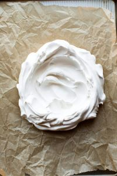

Kauniin ja herkullisen pavlovan pehmeä marenki ja kermatäyte tekevät siitä täydellisen jälkiruoan juhliin tai arkeen.
Ainekset
Marenki:
- 4 munanvalkuaista
- 2 dl sokeria
- 1 tl maissitärkkelystä
- 1 tl valkoviinietikkaa
Täyte:
- 2 dl vispikermaa
- 200 g maitorahkaa
- 2 rkl sokeria
- Tuoreita marjoja koristeluun
Valmistusohjeet
1. Vatkaa valkuaiset kovaksi vaahdoksi. Lisää sokeri vähitellen, jatka vatkaamista.
2. Lisää lopuksi maissitärkkelys ja etikka.
3. Levitä marenkivaahto uunipellille keoksi. Paista 125°C noin 1,5 tuntia.
4. Vatkaa täytteen kerma, rahka ja sokeri. Lusikoi marengin päälle ja koristele marjoilla.
Vaiheittaiset kuvat
